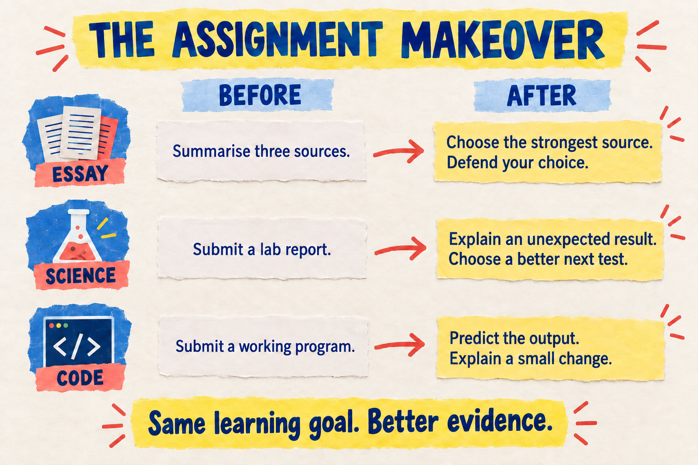

Open an assignment you already use. If a student pasted the instructions into a chatbot and handed in the result, which part of your assessment would reveal what they could actually do?
You do not need a cleverer instruction to “AI-proof” it. You need to decide which evidence matters—and build a manageable opportunity to see it. Here are three assignment makeovers you can adapt without rebuilding your course.
First, keep the learning goal steady
An essay, lab report or program is a format. Evaluating a source, interpreting a result or debugging a function is a capability. Write down the capability before changing the format. Otherwise, an elaborate new task can quietly assess something different.
This is the useful part of the conversation about AI-resilient assessment. TEQSA’s 2025 assessment-reform guidance favours varied evidence and demonstrations of capability, while acknowledging workload and accessibility. It addresses Australian higher education; the school examples below are my adaptations, not interventions tested by the guidance. [1]
Makeover 1 · The source-based essay
Before: “Summarise three sources about single-use plastics and write a recommendation.”
The gap: A fluent summary may tell you little about whether the student can judge the sources. If source evaluation is the goal, give that judgement a visible place in the task.
After: Keep the recommendation, but require students to select the strongest source and explain why another is less useful. Provide a manageable shared source pack. During class, ask everyone to make an initial choice with one supporting passage. On submission day, introduce a changed condition: “Your strongest source is unavailable. How does that change your recommendation?”
What to assess: relevance, limitations and the link between evidence and recommendation. A different choice can still be well justified. If the actual goal is independent prose composition, preserve a suitable writing sample too.
Make room: shorten a repetitive summary section to accommodate the evaluation. The redesign should improve the evidence, not simply add pages.
Makeover 2 · The science report
Before: “Submit a complete report on your experiment.”
The gap: A conventional report can look convincing while concealing whether a student understands an unexpected result or the limits of the method.
After: Retain the report sections your course requires. Replace some routine description with an annotated graph and a short “What would I test next?” box. In class, ask students to identify a surprising point, consider a plausible explanation and choose one improvement that would help distinguish between explanations.
If the data contain no surprising point, use a teacher-prepared hypothetical anomaly clearly labelled as invented. Do not encourage students to manufacture observations. Keep the investigation safe and within the equipment and methods available.
What to assess: whether the proposed next test follows from the uncertainty. “Repeat it more carefully” needs a reason and a specific change.
Make room: use this discussion during an existing lab debrief. An oral response, annotated diagram or short written explanation can show the same scientific reasoning when matched to the outcome.
Makeover 3 · The coding task
Before: “Build a working program and submit the files.”
The gap: Running code shows that a program works on the tested cases. It does not, by itself, show that its author understands the control flow.
After: Keep the build. Choose a small function related to the learning target and ask students to predict its output for an unfamiliar input before running it. Then provide a modest change—such as a new boundary condition—and ask them to implement or explain it in class.
What to assess: a correct trace, an explanation of the relevant condition and a defensible change. Keep the scope small enough that typing speed and memorised syntax do not become accidental assessment targets.
Make room: replace a long retrospective development diary with a focused code annotation and this short demonstration, where course requirements allow.

The prompt alone cannot do the job
A chatbot can also write a source critique, invent a lab reflection or explain code. The useful change is the combination of a better-matched task, clear conditions and an opportunity to observe students applying the capability.
The OECD’s 2026 education outlook cautions that successful AI-assisted task performance does not necessarily translate into learning. That supports a careful distinction between assessing a polished product and assessing the capability behind it; it does not prove these three makeovers will improve outcomes. [2]
Put the AI rules on the assignment
State what help is allowed, at which stage, and how students should acknowledge it. For example: “You may use an approved tool for feedback questions after your initial attempt. Verify suggestions against the supplied material. Complete the in-class explanation without generative AI, with your agreed accessibility supports.” Provide an equivalent route using teacher or peer feedback.
Australia’s school framework emphasises explicit expectations, teacher judgement and equitable access. Use it as a design reference, then follow your own school’s policy. Do not put student names, identifiable work or confidential information into unapproved tools. [3]
Your ten-minute makeover
Choose one assignment. Finish this sentence: “A student who succeeds can independently ___.” Identify one place where a finished product could hide a gap. Replace one lower-value requirement with a short demonstration that addresses it. Decide the allowed support and response mode before assigning it.
Keep the evidence in perspective. A decision note can be generated; a nervous conversation can underestimate understanding. Use evidence across time, agreed accommodations and your normal school procedures. This is a way to design a more informative assessment—not a new shortcut for declaring misconduct.
What could you remove from an assignment to make room for better evidence?
Sources & scope
Researched September 27, 2026. The examples and teacher kit are original classroom adaptations, not validated interventions or school policy.
- TEQSA (September 24, 2025). Enacting assessment reform in a time of artificial intelligence. PDF pp. 1–3 and 7–9 reviewed. Non-prescriptive guidance for Australian higher education, including varied evidence, demonstrations, workload and accessibility.
- OECD (January 19, 2026). Digital Education Outlook 2026. Publisher summary reviewed; the full report was not reviewed for this issue.
- Australian Government Department of Education (2023 framework). Australian Framework for Generative AI in Schools. PDF pp. 6–7 reviewed; publication page updated June 17, 2025 following review. Australian school guidance, not Nova Scotia policy.
AI Is Not the Teacher: What Generative AI Can and Cannot Do →